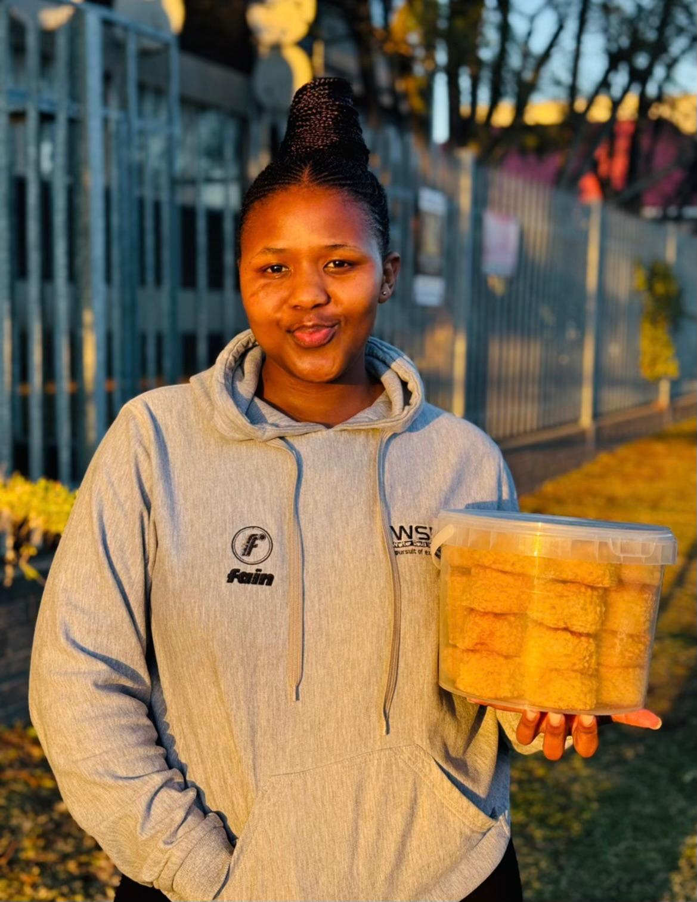

A home kitchen that grew into a bakery
Sikie's started with one loaf of sourdough for the neighbours it hasn't stopped rising since.

Baking has always been how she says "I love you"
Sikie learned to bake standing on a chair next to her grandmother's stove, watching rusks dry overnight and koeksisters go from dough to syrup-soaked twist. What began as weekend batches for family became Sikie's Homemade Bakery a one-woman kitchen turning out bread, cakes and traditional treats for the East London community.
Every order is still mixed by hand, in small batches, with the same recipes passed down at that stove. Nothing here is mass-produced — if it comes out of Sikie's oven, someone tasted it first.
The values behind every bake
Made with love
Every batch is treated like it's for family because a lot of the time, it is.
Honest ingredients
Real butter, farm eggs, and no artificial preservatives — ever.
Community first
Sikie's grows through word of mouth one happy customer at a time.
From your request to your doorstep
You reach out
Send your order through the menu, or message Sikie directly with a custom request.
We plan the bake
Flavours, quantities and your pickup or delivery time are confirmed with you.
It goes in the oven
Doughs are proofed, cakes are layered, and everything is baked fresh for your slot.
You collect it warm
Pickup in East London, or arrange delivery — either way, it's still warm.
Come taste the difference a home kitchen makes
Browse the menu and see what's baking this week.
See the menu